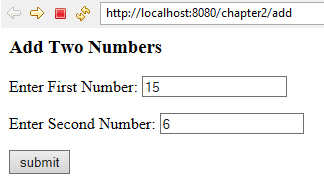
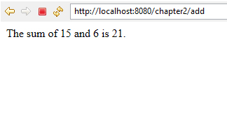

2.5 Handling both GET and POST request
In section 2.3 we have created an HTML form that sends GET request and to handle GET request we created a servlet that uses a doGet method.
In section 2.4 we have created an HTML form that sends POST request and to handle POST request we created a servlet that uses a doPost method.
Now, we want a servlet to be able to handle both GET and POST requests. This approach is a good standard practice when you want HTML forms to have some flexibility in how they send data to the servlet. To do this, call doGet inside the doPost method as shown in following code.
// doGet() handles GET request
protected void doGet(HttpServletRequest request,
HttpServletResponse response)
throws ServletException, IOException
{
......
......
}
// doPost() handles POST request
protected void doPost(HttpServletRequest request,
HttpServletResponse response)
throws ServletException, IOException
{
doGet(request, response); // call doGet()
}Now, following is the modified code of the servlet written in previous section to handle both GET and POST request.
package com.beginwithjava.servlet;
import java.io.*;
import javax.servlet.*;
import javax.servlet.annotation.*;
import javax.servlet.http.*;
@WebServlet("/entry")
public class EntryForm extends HttpServlet
{
protected void doGet(HttpServletRequest request,
HttpServletResponse response)
throws ServletException, IOException
{
response.setContentType("text/html");
PrintWriter out = response.getWriter();
out.println("<html><head><title>Add</title></head><body>");
out.println("<p>Username: "
+ request.getParameter("username") + "</p>");
out.println("<p>Password: "
+ request.getParameter("user-password")
+ "</p>");
out.println("<p>Gender: "
+ request.getParameter("sex") + "</p>");
out.println("<p>Hobbies:</p>");
String[] sports = request
.getParameterValues("sports");
out.println("<ul>");
for (String sport : sports)
{
out.println("<li>" + sport + "</li>");
}
out.println("</ul>");
out.println("<p>Address: "
+ request.getParameter("address") + "</p>");
out.println("<p>City: "
+ request.getParameter("city") + "</p>");
out.println("</body></html>");
}
protected void doPost(HttpServletRequest request,
HttpServletResponse response)
throws ServletException, IOException
{
doGet(request, response); // call doGet()
}
}Displays form and process the Request in the same Servlet
Display the form, process the data, and present the result all steps can be by the same servlet. Normal practice is to use doGet() to display the form and doPost() to postprocess the form. You only need to ensure that you use <form method="post">.
Following program explains this :
package com.beginwithjava.servlet;
import java.io.*;
import javax.servlet.*;
import javax.servlet.annotation.*;
import javax.servlet.http.*;
@WebServlet("/add")
public class AddTwoNumbers extends HttpServlet
{
protected void doGet(HttpServletRequest request,
HttpServletResponse response)
throws ServletException, IOException
{
response.setContentType("text/html");
PrintWriter out = response.getWriter();
out.println("<html>");
out.println("<head><title>Table Example</title></head>");
out.println("<body>");
out.println("<h3>Add Two Numbers</h3>");
out.println("<form method='post' action='add'>");
out.println("<p>Enter First Number: <input type='text' name='first'></p>");
out.println("<p>Enter Second Number: <input type='text' name='second'></p>");
out.println("<p><input type='submit' value='submit'></p>");
out.println("</form>");
out.println("</body>");
out.println("</html>");
}
protected void doPost(HttpServletRequest request,
HttpServletResponse response)
throws ServletException, IOException
{
String a = request.getParameter("first");
String b = request.getParameter("second");
int sum = Integer.parseInt(a) + Integer.parseInt(b);
response.setContentType("text/html");
PrintWriter out = response.getWriter();
out.println("<html><head><title>Add</title></head><body>");
out.println("<p>The sum of " + a + " and "
+ b + " is " + sum + ".</p>");
out.println("</body></html>");
}
}

